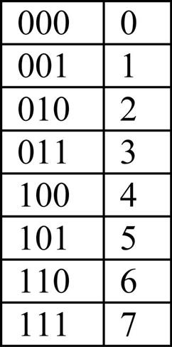
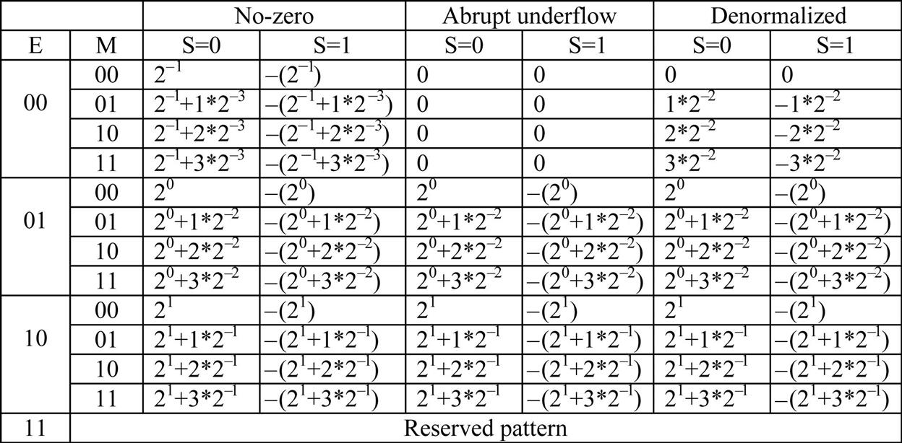
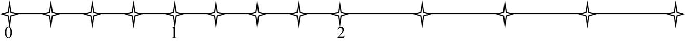
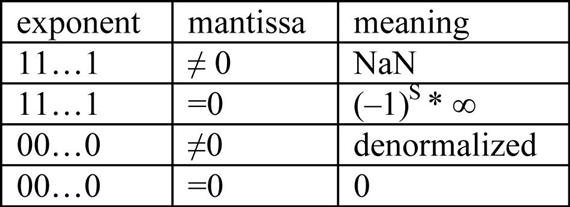
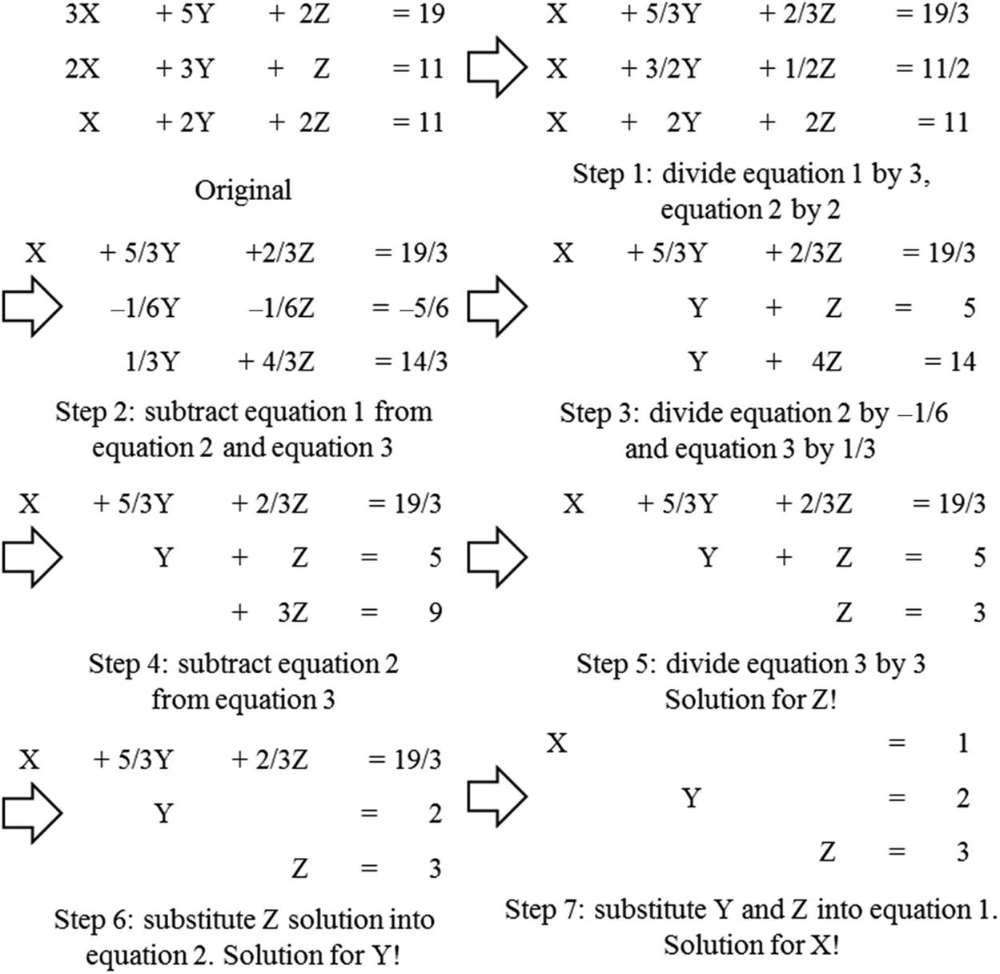

Numerical considerations
In the early days of computing, floating-point arithmetic capability was found only in mainframes and supercomputers. Although many microprocessors that were designed in the 1980s started to have floating-point coprocessors, their floating-point arithmetic speed was extremely slow, about three orders of magnitude slower than that of mainframes and supercomputers. With advances in microprocessor technology, many microprocessors that were designed in the 1990s, such as Intel Pentium III and AMD Athlon, started to have high-performance floating-point capabilities that rivaled those of supercomputers. High-speed floating-point arithmetic is a standard feature of microprocessors and GPUs today. Floating-point representation allows for a larger dynamic range of representable data values and more precise representation of tiny data values. These desirable properties make floating-point arithmetic the preferred data representative for modeling physical and artificial phenomena, such as combustion, aerodynamics, light illumination, and financial risks. Large-scale evaluation of these models has been driving the need for parallel computing. As a result, it is important for application programmers to understand the nature of floating-point arithmetic in developing their parallel applications. In particular, we will focus on the accuracy of floating-point arithmetic operations, the precision of floating-point number representation, the stability of numerical algorithms, and how they should be taken into consideration in parallel programming.
A.1 Floating-point data representation
The IEEE-754 Floating-Point Standard is an effort to ensure that computer manufacturers conform to a common representation and arithmetic behavior for floating-point data (IEEE Microprocessor Standards Committee, 2008). Most, if not all, computer manufacturers in the world have accepted this standard. In particular, virtually all microprocessors that are designed in the future will either fully conform to or almost fully conform to the IEEE-754 Floating-Point Standard and its more recent IEEE-754 2008 revision. Therefore it is important for application developers to understand the concepts and practical considerations of this standard.
A floating-point number system starts with the representation of a numerical value as bit patterns. In the IEEE Floating-Point Standard, a numerical value is represented in three groups of bits: sign (S), exponent (E), and mantissa (M). With some exceptions that will be detailed later in this appendix, each (S, E, M) pattern uniquely identifies a numerical value according to the following formula:
(A.1)
The interpretation of S is simple: S=0 means a positive number, and S=1 a negative number. Mathematically, any number, including −1, when raised to the power of 0, results in 1. Thus the value is positive. On the other hand, when −1 is raised to the power of 1, it is −1 itself. With a multiplication by −1, the value becomes negative. However, the interpretation of M and E bits is much more complex. We will use the following example to help explain the interpretation of M and E bits.
Assume for the sake of simplicity that each floating-point number consists of a 1-bit sign, a 3-bit exponent, and a 2-bit mantissa. We will use this hypothetical 6-bit format to illustrate the challenges that are involved in encoding E and M. As we discuss numerical values, we will sometimes need to express a number either in decimal place value or in binary place value. Numbers that are expressed in decimal place value will have a subscript D, and those that are expressed in binary place value will have a subscript B. For example, 0.5D (5*10−1, since the place to the right of the decimal point carries a weight of 10−1) is the same as 0.1B (1*2−1, since the place to the right of the decimal point carries a weight of 2−1).
A.1.1 Normalized representation of M
Eq. (A.1) requires that all values be derived by treating the mantissa value as 1.M, which makes the mantissa bit pattern for each floating-point number unique. For example, in this interpretation of the M bits, the only mantissa bit pattern that is allowed for 0.5D is the one in which all bits that represent M are 0s:
Other potential candidates would be 0.1B*20 and 10.0B*2−2, but neither fits the form of 1.M. The numbers that satisfy this restriction will be referred to as normalized numbers. Because all mantissa values that satisfy the restriction are of the form 1.XX, we can omit the “1.” part from the representation. Therefore the mantissa value of 0.5 in a 2-bit mantissa representation is 00, which is derived by omitting “1.” from 1.00. This makes a 2-bit mantissa effectively a 3-bit mantissa. In general, in IEEE format, an m-bit mantissa is effectively an (m+1)-bit mantissa.
A.1.2 Excess encoding of E
The number of bits that are used to represent E determines the range of numbers that can be represented. Large positive E values result in very large floating-point absolute values. For example, if the value of E is 64, the floating-point number that is being represented is between 264 (>1018) and 265. You would be extremely happy if this was the balance of your savings account! Large negative E values result in very small floating-point values. For example, if the E value is −64, the number that is being represented is between 2−64 (<10−18) and 2−63. This is a very tiny fractional number. The E field allows a floating-point number format to represent a wider range of numbers than integer number formats can. We will come back to this point when we look at the representable numbers of a format.
The IEEE standard adopts an excess or biased encoding convention for E. If E bits are used to represent the exponent E, (2e−1−1) is added to the two’s complement representation for the exponent to form its excess representation. A two’s complement representation is a system in which the negative value of a number can be derived by first complementing every bit of the value and adding 1 to the result. In our 3-bit exponent representation, there are three bits in the exponent (e=3). Therefore the value 23−1−1=011 will be added to the two’s complement representation of the exponent value.
The advantage of excess representation is that an unsigned comparator can be used to compare signed numbers. As shown in Fig. A.1, in our 3-bit exponent representation, the excess-3 bit patterns increase monotonically from −3 to 3 when they are viewed as unsigned numbers. We will refer to each of these bit patterns as the code for the corresponding value. For example, the code for –3 is 000 and that for 3 is 110. Thus if one uses an unsigned number comparator to compare excess-3 code for any number from −3 to 3, the comparator gives the correct comparison result in terms of which number is larger, smaller, and so on. For another example, if one compares excess-3 codes 001 and 100 with an unsigned comparator, 001 is smaller than 100. This is the right conclusion, since the values that they represent, −2 and 1, have exactly the same relation. This is a desirable property for hardware implementation, since unsigned comparators are smaller and faster than signed comparators.
Fig. A.1 also shows that the pattern of all 1’s in the excess representation is a reserved pattern. Note that a 0 value and an equal number of positive and negative values result in an odd number of patterns. Having the pattern 111 as either an even number or an odd number would result in an unbalanced number of positive and negative numbers. The IEEE standard uses this special bit pattern in special ways that will be discussed later in this appendix.
Now we are ready to represent 0.5D with our 6-bit format:
That is, the 6-bit representation for 0.5D is 001000.
In general, with a normalized mantissa and an excess-coded exponent, the value of a number with an n-bit exponent is
(A.2)
A.2 Representable numbers
The representable numbers of a representation format are the numbers that can be exactly represented in the format. For example, if one uses a 3-bit unsigned integer format, the representable numbers are shown in Fig. A.2.

Neither −1 nor 9 can be represented in the format given above. We can draw a number line to identify all the representable numbers, as shown in Fig. A.3, in which all representable numbers of the 3-bit unsigned integer format are marked with stars.
The representable numbers of a floating-point format can be visualized in a similar manner. In Fig. A.4 we show all the representable numbers of what we have so far and two variations. We use a 5-bit format to keep the size of the table manageable. The format consists of 1-bit S, 2-bit E (excess-1 coded), and 2-bit M (with “1.” part omitted). The no-zero column gives the representable numbers of the format we discussed thus far. The reader is encouraged to generate at least part of the no-zero column using Eq. (A.2). Note that with this format, 0 is not one of the representable numbers.

A quick look at how these representable numbers populate the number line, as shown in Fig. A.5, provides further insights into these representable numbers. In Fig. A.5 we show only the positive representable numbers. The negative numbers are symmetric to their positive counterparts on the other side of 0.
We can make five observations. First, the exponent bits define the major intervals of representable numbers. In Fig. A.5 there are three major intervals on each side of 0 because there are two exponent bits. Basically, the major intervals are between powers of 2. With two bits of exponents and one reserved bit pattern (11), there are three powers of 2 (2−1=0.5D, 20=1.0D, 21=2.0D), each of which starts an interval of representable numbers. Keep in mind that there are also three powers of 2 (−2−1=−0.5D, −20=−1.0D, −21=−2.0D) on the left of zero that are not shown in Fig. A.5.
The second observation is that the mantissa bits define the number of representable numbers in each interval. With two mantissa bits we have four representable numbers in each interval. In general, with N mantissa bits, we have 2N representable numbers in each interval. If a value to be represented falls within one of the intervals, it will be rounded to one of these representable numbers. Obviously, the larger the number of representable numbers in each interval, the more precisely we can represent a value in the region. Therefore the number of mantissa bits determines the precision of the representation.
The third observation is that 0 is not representable in this format. It is missing from the representable numbers in the no-zero columns of Fig. A.5. Because 0 is one of the most important numbers, not being able to represent 0 in a number representation system is a serious deficiency. We will address this deficiency soon.
The fourth observation is that the representable numbers become closer to each other toward the neighborhood of 0. Each interval is half the size of the previous interval as we move toward zero. In Fig. A.5 the rightmost interval is of width 2, the next interval is of width 1, and the next interval is of width 0.5. Although not shown in Fig. A.5, there are three intervals on the left of zero. They contain the representable negative numbers. The leftmost interval is of width 2, the next interval is of width 1, and the next interval is width 0.5. Since every interval has the same representable numbers, four in Fig. A.5, the representable numbers becomes closer to each other as we move toward zero. In other words, the representative numbers become closer as their absolute values become smaller. This is a desirable trend because as the absolute values of these numbers become smaller, it is more important to represent them more precisely. The distance between representable numbers determines the maximal rounding error for a value that falls into the interval. For example, if you have one billion dollars in your bank account, you might not even notice that there is a $1 rounding error in calculating your balance. However, if the total balance is $10, having a $1 rounding error would be much more noticeable!
The fifth observation is that, unfortunately, the trend of increasing density of representable numbers and thus the increasing precision of representing numbers in the intervals as we move toward 0 does not hold near 0. That is, there is a gap of representable numbers in the immediate vicinity of 0. This is because the range of normalized mantissa precludes 0. This is another serious deficiency. The representation introduces significantly larger (4×) errors in representing numbers between 0 and 0.5 compared to the errors for the larger numbers between 0.5 and 1.0. In general, with m bits in the mantissa, this style of representation would introduce 2m times more error in the interval closest to zero than in the next interval. For numerical methods that rely on accurate detection of convergence conditions based on very small data values, such deficiency can cause instability in execution time and inaccuracy of results. Furthermore, some algorithms generate small numbers and eventually use them as denominators. The errors in representing these small numbers can be greatly magnified in the division process and cause numerical instability in these algorithms.
One method that can accommodate 0 into a normalized floating-point number system is the abrupt underflow convention, which is illustrated in the second set of columns in Fig. A.4. Whenever E is 0, the number is interpreted as 0. In our 5-bit format, this method takes away eight representable numbers (four positive and four negative) in the vicinity of 0 (between −1.0 and +1.0) and makes them all 0. Because of its simplicity, some minicomputers in the 1980s used the abrupt underflow convention. Even to this day, some arithmetic units that need to operate at high speed still use the abrupt underflow convention. Although this method makes 0 a representable number, it creates an even larger gap between representable numbers in the vicinity of 0, as shown in Fig. A.6. It is obvious, when compared with Fig. A.5, that the gap of representable numbers has been enlarged significantly (by 2×) from 0.5 to 1.0. As we explained earlier, this is very problematic for many numerical algorithms whose correctness reply on accurate representation of small numbers near zero.
The actual method that was adopted by the IEEE standard is called denormalization. The method relaxes the normalization requirement for numbers very close to 0. As is shown in Fig. A.6, whenever E=0, the mantissa is no longer assumed to be of the form 1.XX. Rather, it is assumed to be 0.XX. The value of the exponent is assumed to be the same as in the previous interval. For example, in Fig. A.4 the denormalized representation 00001 has exponent value 00 and mantissa value 01. The mantissa is assumed to be 0.01, and the exponent value is assumed to be the same as that of the previous interval: 0 rather than −1. That is, the value that 00001 represents is now 0.01*20=2−2. Fig. A.7 shows the representable numbers for the denormalized format. The representation now has uniformly spaced representable numbers in the close vicinity of 0. Intuitively, the denormalized convention takes the four numbers in the last interval of representable numbers of a no-zero representation and spreads them out to cover the gap area. This eliminates the undesirable gap in the previous two methods. Note that the distances between representable numbers in the last two intervals are actually identical. In general, if the n-bit exponent is 0, the value is

As we can see, the denormalization formula is quite complex. The hardware also needs to be able to detect whether a number falls into the denormalized interval and choose the appropriate representation for that number. The amount of hardware required to implement denormalization at high speed is quite significant. Implementations that use a moderate amount of hardware often introduce thousands of clock cycles of delay whenever a denormalized number needs to be generated or used. This was the reason why early generations of CUDA devices did not support denormalization. However, virtually all recent generations of CUDA devices do support denormalization, thanks to the increasing number of available transistors of more recent fabrication processes. More specifically, all CUDA devices of compute capability 1.3 and up support denormalized double-precision operands, and all devices of compute capability 2.0 and up support denormalized single-precision operands.
In summary, the precision of a floating-point representation is measured by the maximal error that we can introduce to a floating-point number by representing that number as one of the representable numbers. The smaller the error, the higher is the precision. The precision of a floating-point representation can be improved by adding more bits to the mantissa. Adding one bit to the representation of the mantissa improves the precision by reducing the maximal error by half. Thus a number system has higher precision when it uses more bits for the mantissa. This is reflected in double-precision versus single-precision numbers in the IEEE standard.
A.3 Special bit patterns and precision in IEEE format
We now turn to more specific details of the actual IEEE format. When all exponent bits are 1s, the number that is represented is an infinity value if the mantissa is 0. It is not a number (NaN) if the mantissa is not 0. All special bit patterns of the IEEE floating-point format are described in Fig. A.8.

All other numbers are normalized floating-point numbers. Single-precision numbers have 1-bit S, 8-bit E, and 23-bit M. Double-precision numbers have 1-bit S, 11-bit E, and 52-bit M. Since a double-precision number has 29 more bits for the mantissa, the largest error for representing a number is reduced to 1/229 of that of the single-precision format! With the additional 3 bits of exponent, the double-precision format also extends the number of intervals of representable numbers. This extends the range of representable numbers to very large as well as very small values.
All representable numbers fall between −∞ (negative infinity) and +∞ (positive infinity). An ∞ can be created by overflow, for example, a large number divided by a very small number. Any representable number divided by +∞ or −∞ results in 0.
NaN is generated by operations whose input values do not make sense, such as 0/0, 0*∞, ∞/∞, ∞ −∞. NaN is also used for data that has not been properly initialized in a program. There are two types of NaN in the IEEE standard: signaling and quiet. Signaling NaNs should be represented with the most significant mantissa bit cleared, whereas quiet NaNs are represented with the most significant mantissa bit set.
Signaling NaNs cause an exception when used as input to arithmetic operations. For example, the operation (1.0 + signaling NaN) raises an exception signal to the operating system. Signaling NaNs are used in situations in which the programmer would like to make sure that the program execution is interrupted whenever any NaN values are used in floating-point computations. These situations usually mean that there is something wrong with the execution of the program. In mission critical applications the execution cannot continue until the validity of the execution can be verified by a separate means. For example, software engineers often mark all the uninitialized data as signaling NaN. This practice ensures the detection of using uninitialized data during program execution. The current generation of GPU hardware does not support signaling NaN, owing to the difficulty of supporting accurate signaling during massively parallel execution.
A quiet NaN generates another quiet NaN without causing an exception when it is used as input to an arithmetic operation. For example, the operation (1.0 + quiet NaN) generates a quiet NaN. Quiet NaNs are typically used in applications in which the user can review the output and decide whether the application should be rerun with a different input for more valid results. When the results are printed, quiet NaNs are printed as “NaN” so that the user can spot them in the output file easily.
A.4 Arithmetic accuracy and rounding
Now that we have a good understanding of the IEEE floating-point format, we are ready to discuss the concept of arithmetic accuracy. While the precision is determined by the number of mantissa bits that are used in a floating-point number format, the accuracy is determined by the operations that are performed on a floating-point number. The accuracy of a floating-point arithmetic operation is measured by the maximal error that is introduced by the operation. The smaller the error, the higher is the accuracy. The most common source of error in floating-point arithmetic is when the operation generates a result that cannot be exactly represented and thus requires rounding. Rounding occurs if the mantissa of the result value needs too many bits to be represented exactly. For example, a multiplication might generate a product value that consists of twice the number of bits as either of the input values. For another example, adding two floating-point numbers can be done by adding their mantissa values together if the two floating-point values have identical exponents. When two input operands to a floating-point addition have different exponents, the mantissa of the one with the smaller exponent is repeatedly divided by 2 or right-shifted (that is, all the mantissa bits are shifted to the right by one bit position) until the exponents are equal. As a result, the final result can have more bits than the format can accommodate.
Alignment shifting of operands can be illustrated with a simple example based on the 5-bit representation in Fig. A.4. Assume that we need to add 1.00B*2−2(0, 00, 01) to 1.00*21D (0, 10, 00), that is, we need to perform the operation 1.00B*21+1.00B*2−2. Owing to the difference in exponent values, the mantissa value of the second number needs to be right-shifted by 3 bit positions before it is added to the first mantissa value. That is, the addition becomes 1.00B*21+0.001B* 21. The addition can now be performed by adding the mantissa values together. The ideal result would be 1.001B*21. However, we can see that this ideal result is not a representable number in a 5-bit representation. It would have required three bits of mantissa, and there are only two mantissa bits in the format. Therefore the best one can do is to generate one of the closest representable numbers, which is either 1.01B*21 or 1.00B*21. By doing so, we introduce an error, 0.001B*21, which is half the place value of the least significant place. We refer to this as 0.5D ULP (units in the last place). If the hardware is designed to perform arithmetic and rounding operations perfectly, the most error that one should introduce should be no more than 0.5D ULP. To the best of our knowledge, this is the accuracy that is achieved by addition and subtraction operations in all CUDA devices today.
In practice, some of the more complex arithmetic hardware units, such as division and transcendental functions, are typically implemented with polynomial approximation algorithms. If the hardware does not use a sufficient number of terms in the approximation, the result may have an error that is larger than 0.5D ULP. For example, if the ideal result of an inversion operation is 1.00B*21 but the hardware generates a 1.10B*21, owing to the use of an approximation algorithm, the error is 2D ULP, since the error (1.10B−1.00B=0.10B) is two times bigger than the units in the last place (0.01B). In practice, the hardware inversion operations in some early devices introduce an error that is twice the place value of the least place of the mantissa, or 2 ULP. Thanks to the more abundant transistors in more recent generations of CUDA devices, their hardware arithmetic operations are much more accurate.
A.5 Algorithm considerations
Numerical algorithms often need to sum up a large number of values. For example, the dot product in matrix multiplication needs to sum up pairwise products of input matrix elements. Ideally, the order of summing these values should not affect the final total, since addition is an associative operation. However, with finite precision the order of summing these values can affect the accuracy of the final result. For example, suppose we need to perform a sum reduction on four numbers in our 5-bit representation: 1.00B*20+1.00B*20+1.00B*2−2+1.00B*2−2. If we add up the numbers in strict sequential order, we have the following sequence of operations:
Note that in the second and third steps, the smaller operand simply disappears because it is too small in comparison to the larger operand.
Now let’s consider a parallel algorithm in which the first two values are added and the second two operands are added in parallel. The algorithm then adds up the pairwise sum:
The reader should recognize that this algorithm was is the reduction tree of Chapter 10, Reduction and Minimizing Divergence, and it assumes the associativity of the add operation. Note that the results are different from the sequential result. This is because the sum of the third and fourth values is large enough that it now affects the addition result. This discrepancy between sequential algorithms and parallel algorithms often surprises application developers who are not familiar with floating-point precision and accuracy considerations. Although we showed a scenario in which a parallel algorithm produced a more accurate result than a sequential algorithm, the reader should be able to come up with a slightly different scenario in which the parallel algorithm produces a less accurate result than a sequential algorithm would. That is, the associativity of the add operation is not strictly true for floating-point numbers. Experienced application developers either make sure that the variation in the final result can be tolerated or ensure that the data is sorted or grouped in such a way that the parallel algorithm results in the most accurate results.
A common technique to maximize floating-point arithmetic accuracy is to presort data before a reduction computation. In our sum reduction example, if we presort the data according to ascending numerical order, we will have the following:
When we divide up the numbers into groups in a parallel algorithm, say, the first pair in one group and the second pair in another group, numbers with numerical values that are close to each other are in the same group. Obviously, the sign of the numbers needs to be taken into account during the presorting process. Therefore when we perform addition in these groups, we will likely have accurate results. Furthermore, some parallel algorithms use each thread to sequentially reduce values within each group. Having the numbers sorted in ascending order allows a sequential addition to get higher accuracy. This is a reason why sorting is frequently used in massively parallel numerical algorithms. Interested readers should study more advanced techniques, such as compensated summation algorithm, also known as the Kahan summation algorithm, for getting an even more robust approach to accurate summation of floating-point values (Kahan, 1965).
A.6 Linear solvers and numerical stability
While the order of operations may cause variation in the numerical outcome of reduction operations, it may have even more serious implications for some types of computation, such as solvers for linear systems of equations. In these solvers, different numerical values of input may require different ordering of operations in order to find a solution. If an algorithm fails to follow a desired order of operations for an input, it may fail to find a solution even though the solution exists. Algorithms that can always find an appropriate operation order and thus finding a solution to the problem as long as it exists for any given input values are called numerically stable. Algorithms that fall short are referred to as numerically unstable.
In some cases, numerical stability considerations can make it more difficult to find efficient parallel algorithms for a computational problem. We can illustrate this phenomenon with a solver that is based on Gaussian elimination. Consider the following system of linear equations:
(A.3)
(A.4)
(A.5)
As long as the three planes represented by these equations have an intersection point, we can use Gaussian elimination to derive the solution that gives the coordinate of the intersection point. We show the process of applying Gaussian elimination to this system in Fig. A.9, in which variables are systematically eliminated from lower positioned equations.

In the first step, all equations are divided by their coefficient for the X variable: 3 for Eq. (A.3), 2 for Eq. (A.4), and 1 for Eq. (A.5). This makes the coefficients for X in all equations the same. In step 2, Eq. (A.3) is subtracted from Eqs. (A.4) and (A.5). These subtractions eliminate variable X from Eqs. (A.4) and (A.5), as shown in Fig. A.9.
We can now treat Eqs. (A.4) and (A.5) as a smaller system of equations with one fewer variable than the original equation. Since they do not have variable X, they can be solved independently from Eq. (A.3). We can make more progress by eliminating variable Y from Eq. (A.5). This is done in step 3 by dividing Eqs. (A.4) and (A.5) by the coefficients for their Y variables: −1/6 for Eq. (A.4) and 1/3 for Eq. (A.5). This makes the coefficients for Y in both Eqs. (A.4) and (A.5) the same. In step 4, Eq. (A.4) is subtracted from Eq. (A.5), which eliminates variable Y from Eq. (A.5).
For systems with larger number of equations the process would be repeated more. However, since we have only three variables in this example, the third equation has only the Z variable. We simply need to divide Eq. (A.5) by the coefficient for variable Z. This conveniently gives us the solution Z=3.
With the solution for the Z variable in hand, we can substitute the Z value into Eq. (A.4) to get the solution Y=2. We can then substitute both Z=3 and Y=2 into Eq. (A.3) to get the solution X=1. We now have the complete solution for the original system. It should be obvious why step 6 and step 7 form the second phase of the method called backward substitution. We go backwards from the last equation to the first equation to get solutions for more and more variables.
In general, the equations are stored in matrix forms in computers. Since all calculations involve only the coefficients and the right-hand-side values, we can just store these coefficients and right-hand-side values in a matrix. Fig. A.10 shows the matrix view of the Gaussian elimination and backward substitution process. Each row of the matrix corresponds to an original equation. Operations on equations become operations on matrix rows.
After Gaussian elimination the matrix becomes a triangular matrix. This is a very popular type of matrix for various physics and mathematics reasons. We see that the end goal is to make the coefficient part of the matrix into a diagonal form, in which each row has only a value 1 on the diagonal line. This is called an identity matrix because the result of multiplying any matrix multiplied by an identity matrix is itself. This is also the reason why performing Gaussian elimination on a matrix is equivalent to multiplying the matrix by its inverse matrix.
In general, it is straightforward to design a parallel algorithm for the Gaussian elimination procedure that we illustrated in Fig. A.10. For example, we can write a CUDA kernel and designate each thread to perform all calculations to be done on a row of the matrix. For systems that can fit into shared memory, we can use a thread block to perform Gaussian elimination. All threads iterate through the steps. After each division step, all threads participate in barrier synchronization. They all then perform a subtraction step, after which one thread will stop its participation, since its designated row has no more work to do until the backward substitution phase. After the subtraction step, all threads need to perform barrier synchronization again to ensure that the next step will be done with the updated information. When we have systems of equations with many variables, we can expect a reasonable amount of speedup from the parallel execution.
Unfortunately, the simple Gaussian elimination algorithm that we have been using can suffer from numerical instability. This can be illustrated with the following example:
(A.6)
(A.7)
(A.8)
We will encounter a problem when we perform step 1 of the algorithm. The coefficient for the X variable in Eq. (A.6) is zero. We will not be able to divide Eq. (A.6) by the coefficient for variable X and eliminate the X variable from Eqs. (A.7) and (A.8) by subtracting Eq. (A.6) from Eqs. (A.7) and (A.8). The reader should verify that this system of equation is solvable and has the same solution: X=1, Y=2, and Z=3. Therefore the algorithm is numerically unstable. It can fail to generate a solution for certain input values even though the solution exists.
This is a well-known problem with Gaussian elimination algorithms and can be addressed with a method that is commonly referred to as pivoting. The idea is to find one of the remaining equations whose coefficient for the lead variable is not zero. By swapping the current top equation with the identified equation, the algorithm can successfully eliminate the lead variable from the rest of the equations. If we apply pivoting to the three equations, we end up with the following set of equations:
(A.9)
(A.10)
(A.11)
Note that the coefficient for X in Eq. (A.9) is no longer zero. We can proceed with Gaussian elimination, as illustrated in Fig. A.11.
The reader should follow the steps in Fig. A.11. The most important additional insight is that some equations might not have the variable that the algorithm is eliminating at the current step (see row 2 of step 1 in Fig. A.11). The designated thread does not need to do the division on the equation.
In general, the pivoting step should choose the equation with the largest absolute coefficient value among all the lead variables and swap its equation (row) with the current top equation as well as swap the variable (column) with the current variable. While pivoting is conceptually simple, it can incur significant implementation complexity and performance overhead. In the case of our simple CUDA kernel implementation, recall that each thread is assigned a row. Pivoting requires an inspection and perhaps swapping of coefficient data spread across these threads. This is not a big problem if all coefficients are in the shared memory. We can run a parallel max reduction using threads in the block as long as we control the level of control flow divergence within warps.
However, if the system of linear equations is being solved by multiple thread blocks or even multiple nodes of a compute cluster, the idea of inspecting data that is spread across multiple thread blocks or multiple compute cluster nodes can be an extremely expensive proposition. This is the main motivation for communication-avoiding algorithms that avoid a global inspection of data such as pivoting (Ballard et al., 2011). In general, there are two approaches to this problem. Partial pivoting restricts the candidates of the swap operation to come from a localized set of equations so that the cost of global inspection is limited. However, this can slightly reduce the numerical accuracy of the solution. Researchers have also demonstrated that randomization tends to maintain a high level of numerical accuracy for the solution.
A.7 Summary
In this appendix we introduced the concepts of floating-point format and representable numbers, which are foundational to the understanding of precision. On the basis of these concepts, we explained the denormalized numbers and why they are important in many numerical applications. In early CUDA devices, denormalized numbers were not supported. However, more recent hardware generations support denormalized numbers. We also explained the concept of arithmetic accuracy of floating-point operations. It is important for CUDA programmers to understand the potential lower accuracy of fast arithmetic operations implemented in the special function units. More important, the reader should now have a good understanding of why parallel algorithms can often affect the accuracy of calculation results and how sorting and other techniques can be used to improve the accuracy of computation.
Exercises
- 1. Draw the equivalent of Fig. A.5 for a 6-bit format (1-bit sign, 3-bit mantissa, 2-bit exponent). Use your result to explain what each additional mantissa bit does to the set of representable numbers on the number line.
- 2. Draw the equivalent of Fig. A.5 for another 6-bit format (1-bit sign, 2-bit mantissa, 3-bit exponent). Use your result to explain what each additional exponent bit does to the set of representable numbers on the number line.
- 3. Assume that in a new processor design, owing to technical difficulty, the floating-point arithmetic unit that performs addition can only do “round to zero” (rounding by truncating the value toward 0). The hardware maintains a sufficient number of bits that the only error that is introduced is due to rounding. What is the maximal ULP error value for add operations on this machine?
- 4. A graduate student wrote a CUDA kernel to reduce a large floating-point array to the sum of all its elements. The array will always be sorted from the smallest values to the largest values. To avoid branch divergence, the student decided to implement the algorithm of Fig. A.4. Explain why this can reduce the accuracy of the results.
- 5. Assume that in an arithmetic unit design, the hardware implements an iterative approximation algorithm that generates two additional accurate mantissa bits of the result for the sin() function in each clock cycle. The architect decided to allow the arithmetic function to iterate nine clock cycles. Assume that the hardware fills in all remaining mantissa bits as 0’s. What would be the maximal ULP error of the hardware implementation of the sin() function in this design for IEEE single-precision numbers? Assume that the omitted “1.” mantissa bit must also be generated by the arithmetic unit.